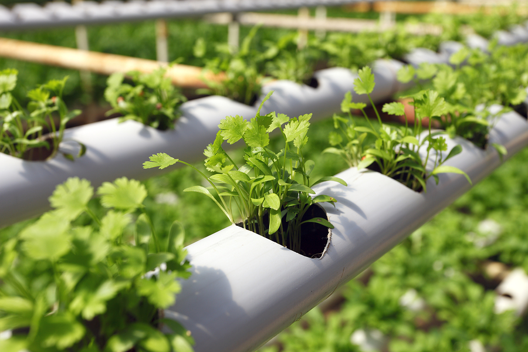

Hydroponics
Hydroponics is the method of soiless farming, while there are a lot of different techniques in this culture. These methods greatly reduces the use of resources, including water (~55%), while increases the possibilities of farming. Vertical farming can increase the number of products; astronauts can now grow food in space. This is the new revolution of the farming world.
Credits